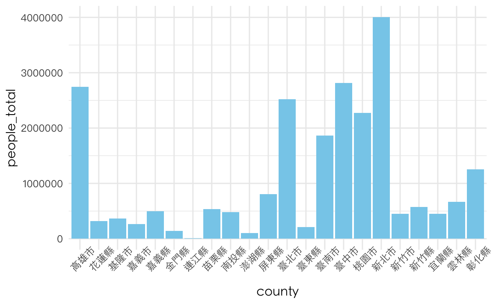
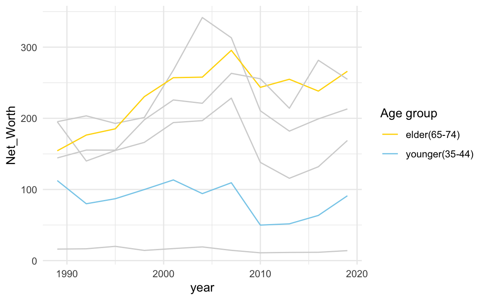
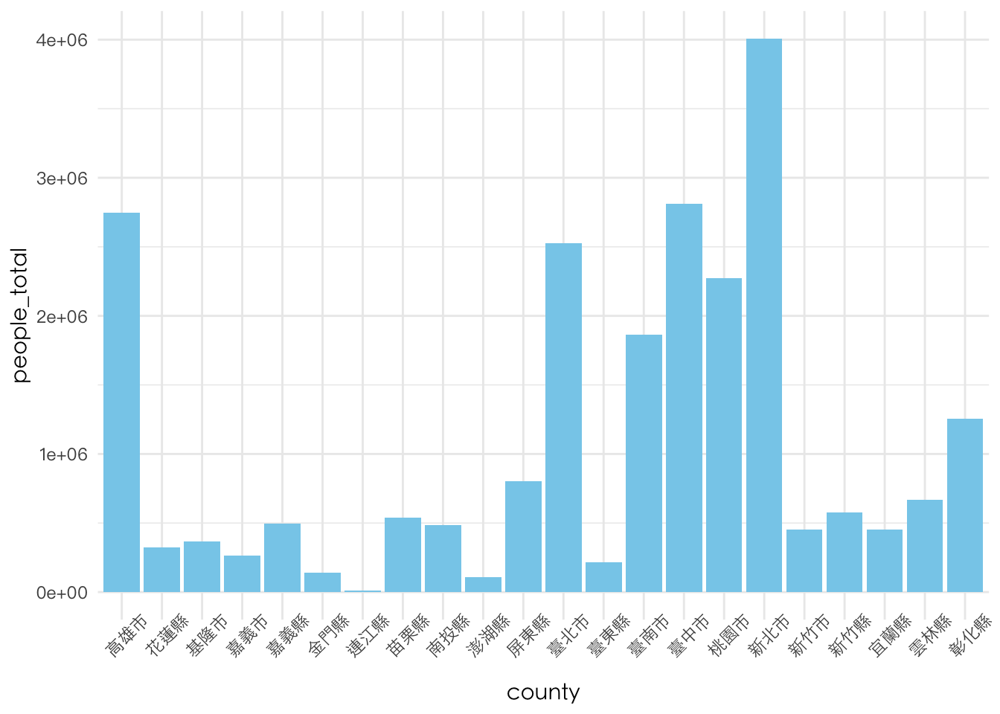

6.2 時間軸的視覺化
library(tidyverse)
library(lubridate)
# options(stringsAsFactors = F) # default option in R > 4.06.2.1 文字轉時間
- Convert “character time” to R date.time object (POSIXct)
ptturl <- "https://github.com/P4CSS/R4CSSData/raw/main/ptt_hang_posts.csv"
raw <- read.csv(url(ptturl))
clean <- raw %>%
mutate(ptime = as.POSIXct(strptime(ptime, "%Y-%m-%dT%H:%M:%SZ", tz = "ASIA/Taipeiw")))
raw <- read_csv(url(ptturl))
?read_csv| read_delim | R Documentation |
Read a delimited file (including CSV and TSV) into a tibble
Description
read_csv() and read_tsv() are special cases of the more general
read_delim(). They’re useful for reading the most common types of
flat file data, comma separated values and tab separated values,
respectively. read_csv2() uses ; for the field separator and , for the
decimal point. This format is common in some European countries.
Usage
read_delim(
file,
delim = NULL,
quote = "\"",
escape_backslash = FALSE,
escape_double = TRUE,
col_names = TRUE,
col_types = NULL,
col_select = NULL,
id = NULL,
locale = default_locale(),
na = c("", "NA"),
quoted_na = TRUE,
comment = "",
trim_ws = FALSE,
skip = 0,
n_max = Inf,
guess_max = min(1000, n_max),
name_repair = "unique",
num_threads = readr_threads(),
progress = show_progress(),
show_col_types = should_show_types(),
skip_empty_rows = TRUE,
lazy = should_read_lazy()
)
read_csv(
file,
col_names = TRUE,
col_types = NULL,
col_select = NULL,
id = NULL,
locale = default_locale(),
na = c("", "NA"),
quoted_na = TRUE,
quote = "\"",
comment = "",
trim_ws = TRUE,
skip = 0,
n_max = Inf,
guess_max = min(1000, n_max),
name_repair = "unique",
num_threads = readr_threads(),
progress = show_progress(),
show_col_types = should_show_types(),
skip_empty_rows = TRUE,
lazy = should_read_lazy()
)
read_csv2(
file,
col_names = TRUE,
col_types = NULL,
col_select = NULL,
id = NULL,
locale = default_locale(),
na = c("", "NA"),
quoted_na = TRUE,
quote = "\"",
comment = "",
trim_ws = TRUE,
skip = 0,
n_max = Inf,
guess_max = min(1000, n_max),
progress = show_progress(),
name_repair = "unique",
num_threads = readr_threads(),
show_col_types = should_show_types(),
skip_empty_rows = TRUE,
lazy = should_read_lazy()
)
read_tsv(
file,
col_names = TRUE,
col_types = NULL,
col_select = NULL,
id = NULL,
locale = default_locale(),
na = c("", "NA"),
quoted_na = TRUE,
quote = "\"",
comment = "",
trim_ws = TRUE,
skip = 0,
n_max = Inf,
guess_max = min(1000, n_max),
progress = show_progress(),
name_repair = "unique",
num_threads = readr_threads(),
show_col_types = should_show_types(),
skip_empty_rows = TRUE,
lazy = should_read_lazy()
)
Arguments
file
|
Either a path to a file, a connection, or literal data (either a single string or a raw vector).
Files ending in
Literal data is most useful for examples and tests. To be recognised as
literal data, the input must be either wrapped with
Using a value of |
delim
|
Single character used to separate fields within a record. |
quote
|
Single character used to quote strings. |
escape_backslash
|
Does the file use backslashes to escape special
characters? This is more general than |
escape_double
|
Does the file escape quotes by doubling them?
i.e. If this option is |
col_names
|
Either
If
If
Missing ( |
col_types
|
One of
If
Column specifications created by Alternatively, you can use a compact string representation where each character represents one column:
|
col_select
|
Columns to include in the results. You can use the same
mini-language as |
id
|
The name of a column in which to store the file path. This is
useful when reading multiple input files and there is data in the file
paths, such as the data collection date. If |
locale
|
The locale controls defaults that vary from place to place.
The default locale is US-centric (like R), but you can use
|
na
|
Character vector of strings to interpret as missing values. Set this
option to |
quoted_na
|
|
comment
|
A string used to identify comments. Any text after the comment characters will be silently ignored. |
trim_ws
|
Should leading and trailing whitespace (ASCII spaces and tabs) be trimmed from each field before parsing it? |
skip
|
Number of lines to skip before reading data. If |
n_max
|
Maximum number of lines to read. |
guess_max
|
Maximum number of lines to use for guessing column types.
See |
name_repair
|
Handling of column names. The default behaviour is to
ensure column names are
This argument is passed on as |
num_threads
|
The number of processing threads to use for initial
parsing and lazy reading of data. If your data contains newlines within
fields the parser should automatically detect this and fall back to using
one thread only. However if you know your file has newlines within quoted
fields it is safest to set |
progress
|
Display a progress bar? By default it will only display
in an interactive session and not while knitting a document. The automatic
progress bar can be disabled by setting option |
show_col_types
|
If |
skip_empty_rows
|
Should blank rows be ignored altogether? i.e. If this
option is |
lazy
|
Read values lazily? By default the file is initially only
indexed and the values are read lazily when accessed. Lazy reading is
useful interactively, particularly if you are only interested in a subset
of the full dataset. Note, if you later write to the same file you read
from you need to set |
![[Deprecated]](../help/figures/lifecycle-deprecated.svg)
Value
A tibble(). If there are parsing problems, a warning will alert you.
You can retrieve the full details by calling problems() on your dataset.
Examples
# Input sources -------------------------------------------------------------
# Read from a path
read_csv(readr_example("mtcars.csv"))
read_csv(readr_example("mtcars.csv.zip"))
read_csv(readr_example("mtcars.csv.bz2"))
## Not run:
# Including remote paths
read_csv("https://github.com/tidyverse/readr/raw/main/inst/extdata/mtcars.csv")
## End(Not run)
# Or directly from a string with `I()`
read_csv(I("x,y\n1,2\n3,4"))
# Column types --------------------------------------------------------------
# By default, readr guesses the columns types, looking at `guess_max` rows.
# You can override with a compact specification:
read_csv(I("x,y\n1,2\n3,4"), col_types = "dc")
# Or with a list of column types:
read_csv(I("x,y\n1,2\n3,4"), col_types = list(col_double(), col_character()))
# If there are parsing problems, you get a warning, and can extract
# more details with problems()
y <- read_csv(I("x\n1\n2\nb"), col_types = list(col_double()))
y
problems(y)
# File types ----------------------------------------------------------------
read_csv(I("a,b\n1.0,2.0"))
read_csv2(I("a;b\n1,0;2,0"))
read_tsv(I("a\tb\n1.0\t2.0"))
read_delim(I("a|b\n1.0|2.0"), delim = "|")
t <- "2019-04-12T00:48:19Z"
class(t)## [1] "character"?strptime| strptime | R Documentation |
Date-time Conversion Functions to and from Character
Description
Functions to convert between character representations and objects of
classes “POSIXlt” and “POSIXct” representing calendar
dates and times.
Usage
## S3 method for class 'POSIXct' format(x, format = "", tz = "", usetz = FALSE, ...) ## S3 method for class 'POSIXlt' format(x, format = "", usetz = FALSE, ...) ## S3 method for class 'POSIXt' as.character(x, ...) strftime(x, format = "", tz = "", usetz = FALSE, ...) strptime(x, format, tz = "")
Arguments
x
|
An object to be converted: a character vector for
|
tz
|
A character string specifying the time zone to be used for
the conversion. System-specific (see |
format
|
A character string. The default for the |
…
|
Further arguments to be passed from or to other methods. |
usetz
|
logical. Should the time zone abbreviation be appended
to the output? This is used in printing times, and more reliable
than using |
Details
The format and as.character methods and strftime
convert objects from the classes “POSIXlt” and
“POSIXct” to character vectors.
strptime converts character vectors to class “POSIXlt”:
its input x is first converted by as.character.
Each input string is processed as far as necessary for the format
specified: any trailing characters are ignored.
strftime is a wrapper for format.POSIXlt, and it and
format.POSIXct first convert to class “POSIXlt” by
calling as.POSIXlt (so they also work for class
“Date”). Note that only that conversion depends on the
time zone.
The usual vector re-cycling rules are applied to x and
format so the answer will be of length of the longer of these
vectors.
Locale-specific conversions to and from character strings are used
where appropriate and available. This affects the names of the days
and months, the AM/PM indicator (if used) and the separators in output
formats such as %x and %X, via the setting of
the LC_TIME locale category. The ‘current
locale’ of the descriptions might mean the locale in use at the start
of the R session or when these functions are first used. (For input,
the locale-specific conversions can be changed by calling
Sys.setlocale with category LC_TIME (or
LC_ALL). For output, what happens depends on the OS but
usually works.)
The details of the formats are platform-specific, but the following are
likely to be widely available: most are defined by the POSIX standard.
A conversion specification is introduced by %, usually
followed by a single letter or O or E and then a single
letter. Any character in the format string not part of a conversion
specification is interpreted literally (and %% gives
%). Widely implemented conversion specifications include
-
%a -
Abbreviated weekday name in the current locale on this platform. (Also matches full name on input: in some locales there are no abbreviations of names.)
-
%A -
Full weekday name in the current locale. (Also matches abbreviated name on input.)
-
%b -
Abbreviated month name in the current locale on this platform. (Also matches full name on input: in some locales there are no abbreviations of names.)
-
%B -
Full month name in the current locale. (Also matches abbreviated name on input.)
-
%c -
Date and time. Locale-specific on output,
“%a %b %e %H:%M:%S %Y”on input. -
%C -
Century (00–99): the integer part of the year divided by 100.
-
%d -
Day of the month as decimal number (01–31).
-
%D -
Date format such as
%m/%d/%y: the C99 standard says it should be that exact format (but not all OSes comply). -
%e -
Day of the month as decimal number (1–31), with a leading space for a single-digit number.
-
%F -
Equivalent to %Y-%m-%d (the ISO 8601 date format).
-
%g -
The last two digits of the week-based year (see
%V). (Accepted but ignored on input.) -
%G -
The week-based year (see
%V) as a decimal number. (Accepted but ignored on input.) -
%h -
Equivalent to
%b. -
%H -
Hours as decimal number (00–23). As a special exception strings such as 24:00:00 are accepted for input, since ISO 8601 allows these.
-
%I -
Hours as decimal number (01–12).
-
%j -
Day of year as decimal number (001–366): For input, 366 is only valid in a leap year.
-
%m -
Month as decimal number (01–12).
-
%M -
Minute as decimal number (00–59).
-
%n -
Newline on output, arbitrary whitespace on input.
-
%p -
AM/PM indicator in the locale. Used in conjunction with
%Iand not with%H. An empty string in some locales (for example on some OSes, non-English European locales including Russia). The behaviour is undefined if used for input in such a locale.Some platforms accept
%Pfor output, which uses a lower-case version (%pmay also use lower case): others will outputP. -
%r -
For output, the 12-hour clock time (using the locale’s AM or PM): only defined in some locales, and on some OSes misleading in locales which do not define an AM/PM indicator. For input, equivalent to
%I:%M:%S %p. -
%R -
Equivalent to
%H:%M. -
%S -
Second as integer (00–61), allowing for up to two leap-seconds (but POSIX-compliant implementations will ignore leap seconds).
-
%t -
Tab on output, arbitrary whitespace on input.
-
%T -
Equivalent to
%H:%M:%S. -
%u -
Weekday as a decimal number (1–7, Monday is 1).
-
%U -
Week of the year as decimal number (00–53) using Sunday as the first day 1 of the week (and typically with the first Sunday of the year as day 1 of week 1). The US convention.
-
%V -
Week of the year as decimal number (01–53) as defined in ISO 8601. If the week (starting on Monday) containing 1 January has four or more days in the new year, then it is considered week 1. Otherwise, it is the last week of the previous year, and the next week is week 1. (Accepted but ignored on input.)
-
%w -
Weekday as decimal number (0–6, Sunday is 0).
-
%W -
Week of the year as decimal number (00–53) using Monday as the first day of week (and typically with the first Monday of the year as day 1 of week 1). The UK convention.
-
%x -
Date. Locale-specific on output,
“%y/%m/%d”on input. -
%X -
Time. Locale-specific on output,
“%H:%M:%S”on input. -
%y -
Year without century (00–99). On input, values 00 to 68 are prefixed by 20 and 69 to 99 by 19 – that is the behaviour specified by the 2018 POSIX standard, but it does also say ‘it is expected that in a future version the default century inferred from a 2-digit year will change’.
-
%Y -
Year with century. Note that whereas there was no zero in the original Gregorian calendar, ISO 8601:2004 defines it to be valid (interpreted as 1BC): see https://en.wikipedia.org/wiki/0_(year). However, the standards also say that years before 1582 in its calendar should only be used with agreement of the parties involved.
For input, only years
0:9999are accepted. -
%z -
Signed offset in hours and minutes from UTC, so
-0800is 8 hours behind UTC. Values up to+1400are accepted. (Standard only for output. For input R currently supports it on all platforms.) -
%Z -
(Output only.) Time zone abbreviation as a character string (empty if not available). This may not be reliable when a time zone has changed abbreviations over the years.
Where leading zeros are shown they will be used on output but are
optional on input. Names are matched case-insensitively on input:
whether they are capitalized on output depends on the platform and the
locale. Note that abbreviated names are platform-specific (although
the standards specify that in the C locale they must be the
first three letters of the capitalized English name: this convention
is widely used in English-language locales but for example the French
month abbreviations are not the same on any two of Linux, macOS, Solaris
and Windows). Knowing what the abbreviations are is essential
if you wish to use %a, %b or %h as part of an
input format: see the examples for how to check.
When %z or %Z is used for output with an
object with an assigned time zone an attempt is made to use the values
for that time zone — but it is not guaranteed to succeed.
Not in the standards and less widely implemented are
-
%k -
The 24-hour clock time with single digits preceded by a blank.
-
%l -
The 12-hour clock time with single digits preceded by a blank.
-
%s -
(Output only.) The number of seconds since the epoch.
-
%+ -
(Output only.) Similar to
%c, often“%a %b %e %H:%M:%S %Z %Y”. May depend on the locale.
For output there are also %O[dHImMUVwWy] which may emit
numbers in an alternative locale-dependent format (e.g., roman
numerals), and %E[cCyYxX] which can use an alternative
‘era’ (e.g., a different religious calendar). Which of these
are supported is OS-dependent. These are accepted for input, but with
the standard interpretation.
Specific to R is %OSn, which for output gives the seconds
truncated to 0 <= n <= 6 decimal places (and if %OS is
not followed by a digit, it uses the setting of
getOption(“digits.secs”), or if that is unset, n =
0). Further, for strptime %OS will input seconds
including fractional seconds. Note that %S does not read
fractional parts on output.
The behaviour of other conversion specifications (and even if other
character sequences commencing with % are conversion
specifications) is system-specific. Some systems document that the
use of multi-byte characters in format is unsupported: UTF-8
locales are unlikely to cause a problem.
Value
The format methods and strftime return character vectors
representing the time. NA times are returned as
NA_character_. The elements are restricted to 256 bytes, plus
a time zone abbreviation if usetz is true. (On known platforms
longer strings are truncated at 255 or 256 bytes, but this is not
guaranteed by the C99 standard.)
strptime turns character representations into an object of
class “POSIXlt”. The time zone is used to set the
isdst component and to set the “tzone” attribute if
tz != ““. If the specified time is invalid (for example
“2010-02-30 08:00”) all the components of the result are
NA. (NB: this does means exactly what it says – if it is an
invalid time, not just a time that does not exist in some time zone.)
Printing years
Everyone agrees that years from 1000 to 9999 should be printed with 4 digits, but the standards do not define what is to be done outside that range. For years 0 to 999 most OSes pad with zeros or spaces to 4 characters, and Linux outputs just the number.
OS facilities will probably not print years before 1 CE (aka 1 AD)
‘correctly’ (they tend to assume the existence of a year 0: see
https://en.wikipedia.org/wiki/0_(year), and some OSes get them
completely wrong). Common formats are -45 and -045.
Years after 9999 and before -999 are normally printed with five or more characters.
Some platforms support modifiers from POSIX 2008 (and others). On
Linux the format “%04Y” assures a minimum of four characters
and zero-padding. The internal code (as used on Windows and by
default on macOS) uses zero-padding by default, and formats
%_4Y and %_Y can be used for space padding and no
padding.
Time zone offsets
Offsets from GMT (also known as UTC) are part of the conversion
between timezones and to/from class “POSIXct”, but cause
difficulties as they are often computed incorrectly.
They conventionally have the opposite sign from time-zone
specifications (see Sys.timezone): positive values are
East of the meridian. Although there have been time zones with
offsets like 00:09:21 (Paris in 1900), and 00:44:30 (Liberia until
1972), offsets are usually treated as whole numbers of minutes, and
are most often seen in RFC 5322 email headers in forms like
-0800 (e.g., used on the Pacific coast of the USA in winter).
Format %z can be used for input or output: it is a character
string, conventionally plus or minus followed by two digits for
hours and two for minutes: the standards say that an empty string
should be output if the offset is unknown, but some systems use the
offsets for the time zone in use for the current year.
Sources
Input uses the POSIX function strptime and output the C99
function strftime.
However, not all OSes (notably Windows) provided strptime and
many issues were found for those which did, so since 2000 R has used
a fork of code from glibc. The forked code uses the
system’s strftime to find the locale-specific day and month
names and any AM/PM indicator.
On some platforms (including Windows and by default on macOS) the
system’s strftime is replaced (along with most of the rest of
the C-level datetime code) by code modified from IANA’s tzcode
distribution (https://www.iana.org/time-zones).
Note
The default formats follow the rules of the ISO 8601 international
standard which expresses a day as “2001-02-28” and a time as
“14:01:02” using leading zeroes as here. (The ISO form uses no
space to separate dates and times: R does by default.)
For strptime the input string need not specify the date
completely: it is assumed that unspecified seconds, minutes or hours
are zero, and an unspecified year, month or day is the current one.
(However, if a month is specified, the day of that month has to be
specified by %d or %e since the current day of the
month need not be valid for the specified month.) Some components may
be returned as NA (but an unknown tzone component is
represented by an empty string).
If the time zone specified is invalid on your system, what happens is system-specific but it will probably be ignored.
Remember that in most time zones some times do not occur and some
occur twice because of transitions to/from ‘daylight saving’
(also known as ‘summer’) time. strptime does not
validate such times (it does not assume a specific time zone), but
conversion by as.POSIXct will do so. Conversion by
strftime and formatting/printing uses OS facilities and may
return nonsensical results for non-existent times at DST transitions.
In a C locale %c is required to be
“%a %b %e %H:%M:%S %Y”. As Windows does not comply (and
uses a date format not understood outside N. America), that format is
used by R on Windows in all locales.
References
International Organization for Standardization (2004, 2000, …) ‘ISO 8601. Data elements and interchange formats – Information interchange – Representation of dates and times.’, slightly updated to International Organization for Standardization (2019) ‘ISO 8601-1:2019. Date and time – Representations for information interchange – Part 1: Basic rules’. For links to versions available on-line see (at the time of writing) https://dotat.at/tmp/ISO_8601-2004_E.pdf and https://www.qsl.net/g1smd/isopdf.htm; for information on the current official version, see https://www.iso.org/iso/iso8601.
The POSIX 1003.1 standard, which is in some respects stricter than ISO 8601.
See Also
DateTimeClasses for details of the date-time classes; locales to query or set a locale.
Your system’s help page on strftime to see how to specify their
formats. (On some systems, including Windows, strftime is
replaced by more comprehensive internal code.)
Examples
## locale-specific version of date()
format(Sys.time(), "%a %b %d %X %Y %Z")
## time to sub-second accuracy (if supported by the OS)
format(Sys.time(), "%H:%M:%OS3")
## read in date info in format 'ddmmmyyyy'
## This will give NA(s) in some non-English locales; setting the C locale
## as in the commented lines will overcome this on most systems.
## lct <- Sys.getlocale("LC_TIME"); Sys.setlocale("LC_TIME", "C")
x <- c("1jan1960", "2jan1960", "31mar1960", "30jul1960")
z <- strptime(x, "%d%b%Y")
## Sys.setlocale("LC_TIME", lct)
z
## read in date/time info in format 'm/d/y h:m:s'
dates <- c("02/27/92", "02/27/92", "01/14/92", "02/28/92", "02/01/92")
times <- c("23:03:20", "22:29:56", "01:03:30", "18:21:03", "16:56:26")
x <- paste(dates, times)
strptime(x, "%m/%d/%y %H:%M:%S")
## time with fractional seconds
z <- strptime("20/2/06 11:16:16.683", "%d/%m/%y %H:%M:%OS")
z # prints without fractional seconds
op <- options(digits.secs = 3)
z
options(op)
## time zone names are not portable, but 'EST5EDT' comes pretty close.
(x <- strptime(c("2006-01-08 10:07:52", "2006-08-07 19:33:02"),
"%Y-%m-%d %H:%M:%S", tz = "EST5EDT"))
attr(x, "tzone")
## An RFC 5322 header (Eastern Canada, during DST)
## In a non-English locale the commented lines may be needed.
## prev <- Sys.getlocale("LC_TIME"); Sys.setlocale("LC_TIME", "C")
strptime("Tue, 23 Mar 2010 14:36:38 -0400", "%a, %d %b %Y %H:%M:%S %z")
## Sys.setlocale("LC_TIME", prev)
## Make sure you know what the abbreviated names are for you if you wish
## to use them for input (they are matched case-insensitively):
format(seq.Date(as.Date('1978-01-01'), by = 'day', len = 7), "%a")
format(seq.Date(as.Date('2000-01-01'), by = 'month', len = 12), "%b")
t1 <- strptime(t, "%Y-%m-%dT%H:%M:%SZ")
raw %>% glimpse()## Rows: 8,317
## Columns: 7
## $ plink <chr> "https://www.ptt.cc/bbs/HatePolitics/M.1555035677.A.24B.html"…
## $ board <chr> "HatePolitics", "HatePolitics", "HatePolitics", "HatePolitics…
## $ pcontent <chr> "\n\n韓國瑜赴哈佛大學前受訪表示，就是「keeping practice」，盡…
## $ poster <chr> "lovebxcx", "ikr3699654", "sunyeah", "rock720429", "btm978952…
## $ ptitle <chr> "Re: [新聞] 重申反對一國兩制 韓國瑜：看著我靈魂深", "Re: [討…
## $ ptime <dttm> 2019-04-12 02:21:14, 2019-04-12 02:13:45, 2019-04-12 02:10:1…
## $ ipaddr <chr> "83.221.204.163", "114.43.176.110", "118.163.130.181", "118.1…6.2.3 逐月統計資料
?lubridate| lubridate-package | R Documentation |
Dates and times made easy with lubridate
Description
Lubridate provides tools that make it easier to parse and manipulate dates. These tools are grouped below by common purpose. More information about each function can be found in its help documentation.
Parsing dates
Lubridate’s parsing functions read strings into R as POSIXct
date-time objects. Users should choose the function whose name
models the order in which the year (‘y’), month (‘m’) and day
(‘d’) elements appear the string to be parsed:
dmy(), myd(), ymd(),
ydm(), dym(), mdy(),
ymd_hms()). A very flexible and user friendly parser
is provided by parse_date_time().
Lubridate can also parse partial dates from strings into
Period objects with the functions
hm(), hms() and ms().
Lubridate has an inbuilt very fast POSIX parser. Most of the strptime()
formats and various extensions are supported for English locales. See
parse_date_time() for more details.
Manipulating dates
Lubridate distinguishes between moments in time (known as
instants()) and spans of time (known as time spans, see
Timespan). Time spans are further separated into
Duration, Period and
Interval objects.
Instants
Instants are specific moments of time. Date, POSIXct, and
POSIXlt are the three object classes Base R recognizes as
instants. is.Date() tests whether an object
inherits from the Date class. is.POSIXt() tests
whether an object inherits from the POSIXlt or POSIXct classes.
is.instant() tests whether an object inherits from
any of the three classes.
now() returns the current system time as a POSIXct
object. today() returns the current system date.
For convenience, 1970-01-01 00:00:00 is saved to
origin. This is the instant from which POSIXct
times are calculated. Try unclass(now()) to see the numeric structure that
underlies POSIXct objects. Each POSIXct object is saved as the number of seconds
it occurred after 1970-01-01 00:00:00.
Conceptually, instants are a combination of measurements on different units
(i.e, years, months, days, etc.). The individual values for
these units can be extracted from an instant and set with the
accessor functions second(), minute(),
hour(), day(), yday(),
mday(), wday(), week(),
month(), year(), tz(),
and dst().
Note: the accessor functions are named after the singular form
of an element. They shouldn’t be confused with the period
helper functions that have the plural form of the units as a
name (e.g, seconds()).
Rounding dates
Instants can be rounded to a convenient unit using the
functions ceiling_date(), floor_date()
and round_date().
Time zones
Lubridate provides two helper functions for working with time
zones. with_tz() changes the time zone in which an
instant is displayed. The clock time displayed for the instant
changes, but the moment of time described remains the same.
force_tz() changes only the time zone element of an
instant. The clock time displayed remains the same, but the
resulting instant describes a new moment of time.
Timespans
A timespan is a length of time that may or may not be connected to a particular instant. For example, three months is a timespan. So is an hour and a half. Base R uses difftime class objects to record timespans. However, people are not always consistent in how they expect time to behave. Sometimes the passage of time is a monotone progression of instants that should be as mathematically reliable as the number line. On other occasions time must follow complex conventions and rules so that the clock times we see reflect what we expect to observe in terms of daylight, season, and congruence with the atomic clock. To better navigate the nuances of time, lubridate creates three additional timespan classes, each with its own specific and consistent behavior: Interval, Period and Duration.
is.difftime() tests whether an object
inherits from the difftime class. is.timespan()
tests whether an object inherits from any of the four timespan
classes.
Durations
Durations measure the exact amount of time that occurs between two instants. This can create unexpected results in relation to clock times if a leap second, leap year, or change in daylight savings time (DST) occurs in the interval.
Functions for working with durations include is.duration(),
as.duration() and duration(). dseconds(),
dminutes(), dhours(), ddays(),
dweeks() and dyears() convenient lengths.
Periods
Periods measure the change in clock time that occurs between two instants. Periods provide robust predictions of clock time in the presence of leap seconds, leap years, and changes in DST.
Functions for working with periods include
is.period(), as.period() and
period(). seconds(),
minutes(), hours(), days(),
weeks(), months() and
years() quickly create periods of convenient
lengths.
Intervals
Intervals are timespans that begin at a specific instant and end at a specific instant. Intervals retain complete information about a timespan. They provide the only reliable way to convert between periods and durations.
Functions for working with intervals include
is.interval(), as.interval(),
interval(), int_shift(),
int_flip(), int_aligns(),
int_overlaps(), and
%within%. Intervals can also be manipulated with
intersect, union, and setdiff().
Miscellaneous
decimal_date() converts an instant to a decimal of
its year.
leap_year() tests whether an instant occurs during
a leap year.
pretty_dates() provides a method of making pretty
breaks for date-times.
lakers is a data set that contains information
about the Los Angeles Lakers 2008-2009 basketball season.
Author(s)
Maintainer: Vitalie Spinu spinuvit@gmail.com
Authors:
-
Garrett Grolemund
-
Hadley Wickham
Other contributors:
-
Davis Vaughan [contributor]
-
Ian Lyttle [contributor]
-
Imanuel Costigan [contributor]
-
Jason Law [contributor]
-
Doug Mitarotonda [contributor]
-
Joseph Larmarange [contributor]
-
Jonathan Boiser [contributor]
-
Chel Hee Lee [contributor]
-
Google Inc. [contributor, copyright holder]
References
Garrett Grolemund, Hadley Wickham (2011). Dates and Times Made Easy with lubridate. Journal of Statistical Software, 40(3), 1-25. https://www.jstatsoft.org/v40/i03/.
See Also
Useful links:
raw %>%
mutate(m = month(ptime)) %>%
count(m) %>%
ggplot() + aes(m, n) +
geom_col()
6.2.4 逐日統計資料（佳）
raw %>%
filter(ptime >= as_date("2019-03-18") & ptime < as_date("2019-04-01")) %>%
mutate(m = floor_date(ptime, unit = "day")) %>%
count(m) %>%
ggplot() + aes(m, n) +
geom_col()
6.2.5 每日逐時資料
clean %>%
filter(ptime >= as_datetime("2019-03-25") & ptime < as_datetime("2019-04-01")) %>%
mutate(d = floor_date(ptime, unit = "day")) %>%
mutate(h = hour(ptime)) %>%
count(d, h) %>%
mutate(wd = wday(d, label = F, locale = Sys.getlocale("LC_TIME"))) %>%
mutate(isweekend = ifelse(wd >= 6, "weekend", "weekday")) %>%
ggplot() + aes(h, n, color = as.character(d)) +
geom_line() +
facet_wrap(~isweekend)
?ifelse| ifelse | R Documentation |
Conditional Element Selection
Description
ifelse returns a value with the same shape as
test which is filled with elements selected
from either yes or no
depending on whether the element of test
is TRUE or FALSE.
Usage
ifelse(test, yes, no)
Arguments
test
|
an object which can be coerced to logical mode. |
yes
|
return values for true elements of |
no
|
return values for false elements of |
Details
If yes or no are too short, their elements are recycled.
yes will be evaluated if and only if any element of test
is true, and analogously for no.
Missing values in test give missing values in the result.
Value
A vector of the same length and attributes (including dimensions and
“class”) as test and data values from the values of
yes or no. The mode of the answer will be coerced from
logical to accommodate first any values taken from yes and then
any values taken from no.
Warning
The mode of the result may depend on the value of test (see the
examples), and the class attribute (see oldClass) of the
result is taken from test and may be inappropriate for the
values selected from yes and no.
Sometimes it is better to use a construction such as
(tmp <- yes; tmp[!test] <- no[!test]; tmp)
, possibly extended to handle missing values in test.
Further note that if(test) yes else no is much more efficient
and often much preferable to ifelse(test, yes, no) whenever
test is a simple true/false result, i.e., when
length(test) == 1.
The srcref attribute of functions is handled specially: if
test is a simple true result and yes evaluates to a function
with srcref attribute, ifelse returns yes including
its attribute (the same applies to a false test and no
argument). This functionality is only for backwards compatibility, the
form if(test) yes else no should be used whenever yes and
no are functions.
References
Becker, R. A., Chambers, J. M. and Wilks, A. R. (1988) The New S Language. Wadsworth & Brooks/Cole.
See Also
if.
Examples
x <- c(6:-4)
sqrt(x) #- gives warning
sqrt(ifelse(x >= 0, x, NA)) # no warning
## Note: the following also gives the warning !
ifelse(x >= 0, sqrt(x), NA)
## ifelse() strips attributes
## This is important when working with Dates and factors
x <- seq(as.Date("2000-02-29"), as.Date("2004-10-04"), by = "1 month")
## has many "yyyy-mm-29", but a few "yyyy-03-01" in the non-leap years
y <- ifelse(as.POSIXlt(x)$mday == 29, x, NA)
head(y) # not what you expected ... ==> need restore the class attribute:
class(y) <- class(x)
y
## This is a (not atypical) case where it is better *not* to use ifelse(),
## but rather the more efficient and still clear:
y2 <- x
y2[as.POSIXlt(x)$mday != 29] <- NA
## which gives the same as ifelse()+class() hack:
stopifnot(identical(y2, y))
## example of different return modes (and 'test' alone determining length):
yes <- 1:3
no <- pi^(1:4)
utils::str( ifelse(NA, yes, no) ) # logical, length 1
utils::str( ifelse(TRUE, yes, no) ) # integer, length 1
utils::str( ifelse(FALSE, yes, no) ) # double, length 1